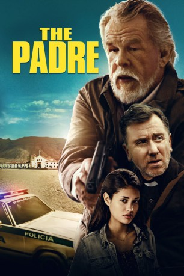

#9895 Padre
 
 IMDB-Wertung: 5.8 / 10
IMDB-Wertung: 5.8 / 10  Metascore: 0
Metascore: 0 
Wild entschlossen, Gerechtigkeit walten zu lassen, macht sich der pensionierte amerikanische Richter Randall Nemes (Nick Nolte) zusammen mit dem Auftragskiller Gaspar (Luis Guzmán) auf, einen unbedeutenden Hochstapler (Tim Roth) zu finden, der sich in einer kleinen kolumbianischen Stadt als Pastor ausgibt. Dabei werden sie allerdings von einem rauflustigen 16-jährigen Mädchen vom Kurs abgebracht, die sich in den Kopf gesetzt hat, ihre kleine Schwester in den USA wiederzufinden.
Jahr: 2018
Dauer: 95 Minuten
FSK: 12
Land: Kanada Studio: Sony Pictures Home EntertainmentTonspuren: DD5.1 - ,
Untertitel:
Auflösung: 1080p (1920x796) Größe: 3594 MB
Genre: Drama
Regisseur: Jonathan Sobol
Drehbuch: Stephen Kunc
Soundtrack:
Darsteller:
 Tim Roth als Padre
Tim Roth als Padre Nick Nolte als Nemes
Nick Nolte als Nemes Luis Guzmán als Gaspar
Luis Guzmán als Gaspar- Benjamin Petersen als The Mark
- Hailey Hermida als Young Christina (uncredited)
- Marie Paquim als Ophelia (uncredited)
- Valeria Henríquez als Lena
- Juana Arboleda als Mariana
- Julio Pachón als Federico
- Nelson Camayo als Agapito
- Diego Figueroa als Barber
- Obeida Benavidez als Clothing Cashier
- Ana Maria Arguelles als Cristina
- Álvaro Bayona als Abejundio (Church Caretaker)
- Hector Chiquillo als Business Man
- Sarah Louise Storer als Business Woman
- Julio Cesar Navarrete als Bartender
- Mauricio Rivera Soto als Elderly Cashier
- Edgar Duran Gomez als Esteban
- Carlos Velasquez als Juanito
- Santiago Soto als Smiley Car Dealer
- Harold Cordoba als Townsman 1
- Juan Felipe Muñoz als Townsman 2
- Rodrigo Marulanda als Townsman 3
- Yorli Leon als Tubby Policia
- Óscar Alzate als Policia 1
- Pedro Suarez als Policia 2
- Jhovany Ramirez als Police Officer
- Maria Camila Rueda als Teen Girl
- Gabriel Pineros als Boy
- Fernando Bocanegra als Clerk
- Santiago Daza als Teen Prisoner
- Daniel Abril als Cashier
- Ronnie Herrera als Gold Buyer
- Yadira Sanchez als Tourist Couple
- Rene Figueroa als Tourist Couple
- Julieta Guiza als Young Lena
- Karolina González als Lena's Mother
- Mia Calvo Gonzalez als Young Cristina
Datei: X:\2018(N-Z)\Padre (2018, FSK12, 1920x796).mkv seit 08.11.2018
Festplatte: HD 2018(G-Z)-2019(A-Z)
 Es gibt insgesamt 172 Filme in der Gruppe '2018(N-Z)'
Es gibt insgesamt 172 Filme in der Gruppe '2018(N-Z)'